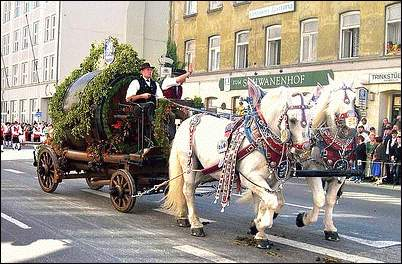

Пивные праздники .

...побежал на базар - и действительно: Клара Борисовна там уже возле пивного ларька с выбитым зубом пляшет.
Ну, вообще-то у немцев все праздники более или менее пивные. Стандартная схема такова: на базарную площадь выставляются павильончики, торгующие пивом и разной закусью (жареными колбасками и т.д.) - понятно, и то, и другое - втридорога; ставится пара каруселей и киоск с сахарной ватой для детей. И, конечно, "живая музыка" - оркестр, громко играющий так называемую "Volksmusik" (затруднюсь сказать, точно ли я слышал что-либо отвратительнее народной музыки). На все это наваливаются стада туземцев - с таким энтузиазмом, будто их из карцера на полчаса под честное слово отпустили. В общем, сдаюсь - секрет привлекательности этих "праздников" я так и не разгадал. Интересная традиция (правда, характерна она, кажется, только для Баварии) - любой пивной праздник начинается с халявы ("Freibier"). Халявы бывает немного (ну, одна бочка, скажем), за ней тут же выстраивается очередь (из людей вполне приличного вида, не бомжей), и халява кончается, не успев начаться. Сам я на такую раздачу ни разу не попадал.
"Oktoberfest" отличается от прочих праздников только размахом: площадкой для него служит Teresienwiese - луг Терезы (в мирное время - огромная автостоянка). Празднуется уже 200 лет - 17 октября 1810 состоялась свадьба кронпринца Людвига I с принцессой Терезой из Саксонии - Гильдбургхаузен (поэтому, собственно, и луг Терезы). Народный праздник планировался как однократный - и, кстати, безалкогольный. Не вышло. С 1872 года лэйбл "Festbier" является защищенным - только несколько мюнхенских пивоварен имеют право варить соответствующий "мэрцен" и продавать в одном из 10 павильонов (замечу - очень больших). Праздник открывает мэр (Buergermeister) Мюнхена - вбивает кран в самую первую бочку и орет "O'zapft is!" (типа, "открыто" по-баварски) - и начинается гудеж на 16 дней. Все это время там весьма людно - найти три сидячих места на прямой видимости друг от друга в выходные невозможно. Помимо детских каруселей есть аттракционы для взрослых. Мы полезли спьяну на американские горки (Achterbahn) - сильная штука. На трезвого человека должно производить ощутимое противозапорное действие. Кстати, на следующий день после нашего посещения этот ахтербан сломался - гондолы врезались друг в друга, и наездники висели чуть не полчаса вверх ногами (переломаными, кстати), пока их не сняли. В павильонах атмосфера жутковатая: висит табачный дым, гремит Volksmusik, энтузиастки в национальных костюмах пытаются танцевать, стоя на лавках - последнее, правда, больше напоминает практикум по строевой подготовке. Несмотря на столпотворение и практически полное отсутствие Bullen ("быков" - так здесь называют не бандитов, а ментов), почти не бывает драк: за время того Октоберфеста, на котором был я, умудрились подраться только армяне с итальянцами - нашли ведь друг друга как-то! Приходилось слышать мнение, что пиво на Октоберфест положено подвозить на лошадях. По этому поводу могу сделать два утверждения:
1) я действительно видел несколько упряжек, груженых пивными бочками, на Терезиенвизе (будучи еще в памяти);
2) не могу себе представить, чтобы именно таким образом можно было доставить все 5 миллионов литров пива, которые выпиваются за праздник, без катастрофических последствий для уличного движения в Мюнхене.

По поводу собственно Oktoberfestbier - ничего, интересная жидкость: дорогу домой помню неважно - кажется, раза три падал с велосипеда.
Нечто подобное, по-видимому, происходит на народном гулянии в Штуттгарте - праздник в честь уборки урожая, празднуется с 28 сентября 1818 года на Канштаттер Вазен по приказу короля Вюртембергского Вильгельма I. Есть мнение, что и здесь поставки пива осуществляются на лошадях (вернее, на повозках, запряженных шестерней). Подробностей не знаю - сам там не был.
Карнавал почему-то не относят к "пивным" праздникам, хотя пьют там, главным образом, именно пиво. Празднуется неделю в начале февраля, перед постом - аналог нашей масленицы. Вообще-то везде в Германии это скорее детский праздник - всерьез его воспринимают только в местности вдоль Рейна (примерно от Майнца до Дюссельдорфа; особо активничают в Кельне). Основное отличие от Октоберфеста - то, что праздник происходит не на ограниченной территории, а по всему городу. То есть деловая жизнь, скажем, в Кельне на эту неделю вообще замирает - нормальные люди берут отпуск и оттягиваются по полной программе, начиная от пьянства и заканчивая промискуитетом. Во время карнавала тоже практически не бывает драк; основной диагноз, с которым попадают в больницу - "алкогольное отравление", а в ментовку - "управление автомобилем в нетрезвом состоянии" (пьют, понятно, не только кельш - им запивают шнапс). Удивительно, но в Кельн на карнавал я тоже ни разу не попал - как-то всякий раз супруга при мне оказывалась, а ехать на карнавал семьей - это несомненное извращение. Кстати, об извращениях: в Кельне же происходит "параллельный" карнавал сексуальных меньшинств (можно легко отличить по обилию розового цвета в одежде участников) - туда лучше не соваться, возможны досадные недоразумения.